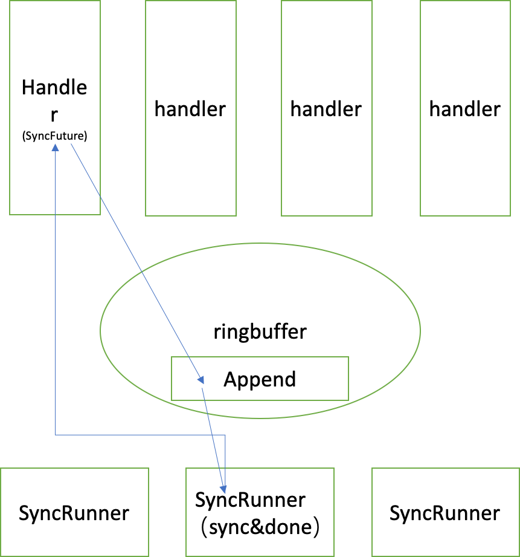

简介
wal在hbase中是为了持久化memstore中未flush到hfile的数据，以防rs宕机或异常退出导致数据的丢失。
wal实现的一头是多个handler线程处理put请求，另一头是针对hdfs写这种费时间的操作。并且需要实现两件事情：一是在写hdfs时不能出现混乱，二是写完hdfs之后需要有个机制通知到在等待hdfs写返回的处理写请求的线程。
wal用了一个ringbuffer，ringbuffer传递内容包括的sync标志（主要用于传递SyncFuture）和数据。分开可以用于控制。
主流程
- handler将entry和txid写入disruptor，然后通过sync函数等待，通过一个threadlocal的设置了txid的SyncFuture，调用get方法阻塞。
- 把SyncFuture和Sync标志写入到disruptor中。
- 在disruptor的Handler的onEvent里：
- 将entry给append到writer里。
- 设置SyncFuture，用于传递。
- 给syncRunners传递带txid的SyncFuture
- SyncRunner会在while里不停的跑，
- releaseSyncFuture已经sync过的数据（可能在别的syncRunner）
- sync数据，然后releaseSyncFuture
三个主要线程
整个写wal流程涉及到如下三个线程。
handler线程
handler通过netty接受来自客户端或thriftserver的写请求。
在private void doMiniBatchMutate(BatchOperation<?> batchOp) throws IOException 总在执行写wal，写memstore，更改mvcc版本等操作。本篇文章主要集中于写wal（否则就跑题了）,主要在如下方法中。
1 2
| writeEntry = doWALAppend(walEdit, batchOp.durability, batchOp.getClusterIds(), now, nonceKey.getNonceGroup(), nonceKey.getNonce(), batchOp.getOrigLogSeqNum());
|
doWALAppend方法里主要内容如下：
1 2 3 4 5
| long txid = this.wal.append(this.getRegionInfo(), walKey, walEdit, true); if (txid != 0) { sync(txid, durability); }
|
append主要把数据加入到ringbuffer中，sync方法具体如下：
- 讲ThreadLocal cachedSyncFutures然后扔到ringbuffer里，然后讲syncFuture返回。
- 执行syncFuture.get(walSyncTimeoutNs)阻塞。
handler线程会卡在syncFuture.get(walSyncTimeoutNs)处。get具体实现如下：
1 2 3 4 5 6 7 8 9 10 11 12 13 14 15 16
| synchronized long get(long timeoutNs) throws InterruptedException, ExecutionException, TimeoutIOException { final long done = System.nanoTime() + timeoutNs; while (!isDone()) { wait(1000); if (System.nanoTime() >= done) { throw new TimeoutIOException( "Failed to get sync result after " + TimeUnit.NANOSECONDS.toMillis(timeoutNs) + " ms for txid=" + this.txid + ", WAL system stuck?"); } } if (this.throwable != null) { throw new ExecutionException(this.throwable); } return this.doneTxid; }
|
从上面的代码可以看到handler线程如果想要退出需要isDone方法返回false或者时间超过timeoutNs。
1 2 3
| synchronized boolean isDone() { return this.doneTxid != NOT_DONE; }
|
handler线程部分到此我们只需要记住doneTxid的修改决定handler线程退出。
onEvent
1 2 3 4 5 6 7 8 9 10 11 12 13 14 15 16 17
| if (truck.type() == RingBufferTruck.Type.SYNC) { this.syncFutures[this.syncFuturesCount.getAndIncrement()] = truck.unloadSync(); if (this.syncFuturesCount.get() == this.syncFutures.length) { endOfBatch = true; } } else if (truck.type() == RingBufferTruck.Type.APPEND) { FSWALEntry entry = truck.unloadAppend(); try { ... append(entry); } catch (Exception e) { .... return; } }
|
在onEvent里获取到的数据分为两种：
- SYNC，在syncFutures设置handler线程传递过来的syncFuture。
- APPEND，调用append。在这里我们可以看到ringbuffer的作用就是把多个线程的写入按时间顺序的append。
我们需要注意这里的endOfBatch，通过一个ringbuffer其实让我们更容易去控制batch，将难度从多个线程移到了一个线程里。
1 2 3 4 5 6 7 8 9 10 11 12 13 14 15 16
| if (!endOfBatch || this.syncFuturesCount.get() <= 0) { return; } this.syncRunnerIndex = (this.syncRunnerIndex + 1) % this.syncRunners.length; try { this.syncRunners[this.syncRunnerIndex].offer(sequence, this.syncFutures, this.syncFuturesCount.get()); } catch (Exception e) { requestLogRoll(); this.exception = new DamagedWALException("Failed offering sync", e); } .... this.syncFuturesCount.set(0);
|
这里通过轮询的方式向syncRunners传递syncFutures。
syncRunner
syncRunner是一些线程，总共syncRunnerCount个，此线程是一个while不停的执行。多个线程通过highestSyncedTxid来沟通到什么地步了。
1 2 3 4 5 6 7 8 9 10 11 12 13 14 15 16 17 18 19 20 21 22 23 24 25 26 27 28 29 30 31 32 33 34 35 36 37 38 39 40 41 42 43 44 45 46 47 48 49 50
| while (!isInterrupted()) { int syncCount = 0; try { while (true) { takeSyncFuture = null; takeSyncFuture = this.syncFutures.take(); currentSequence = this.sequence; long syncFutureSequence = takeSyncFuture.getTxid(); if (syncFutureSequence > currentSequence) { throw new IllegalStateException("currentSequence=" + currentSequence + ", syncFutureSequence=" + syncFutureSequence); } long currentHighestSyncedSequence = highestSyncedTxid.get(); if (currentSequence < currentHighestSyncedSequence) { syncCount += releaseSyncFuture(takeSyncFuture, currentHighestSyncedSequence, null); continue; } break; } try { writer.sync(useHsync); currentSequence = updateHighestSyncedSequence(currentSequence); } catch (IOException e) { ... } finally { syncCount += releaseSyncFuture(takeSyncFuture, currentSequence, lastException); syncCount += releaseSyncFutures(currentSequence, lastException); if (lastException != null) { requestLogRoll(); } else { checkLogRoll(); } } postSync(System.nanoTime() - start, syncCount); } catch (InterruptedException e) { ... } }
|
调用完releaseSyncFuture之后，handler阻塞住的的get方式才能顺利进行下去。
此处需要一张图

思考：syncRunner为多个，大概是为了隔离notifier和sync，两种操作不要在一起，最终可以减轻同步代价。
简单版代码实现
见地址 https://github.com/liubinbin/pan/tree/master/src/main/java/cn/liubinbin/pan/experiment/log/v3